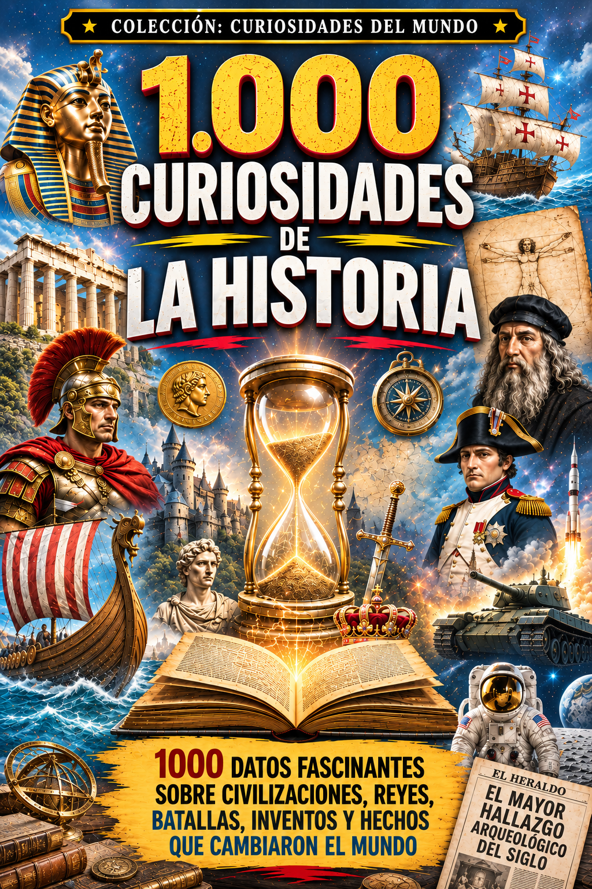
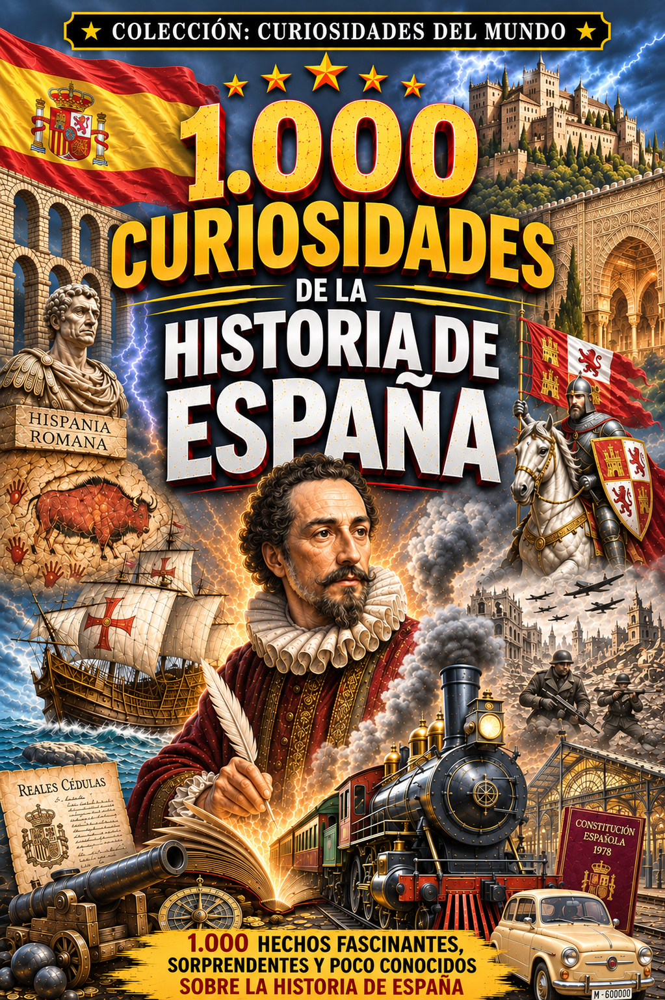

Servicios lingüísticos y editoriales
Las palabras importan.
La manera de decirlas, aún más.
Colaboro con agencias de traducción y servicios editoriales que necesitan calidad, rigor y cumplimiento de los plazos.

¿En qué puedo ayudarte?
Un único profesional para cinco especialidades.
Un servicio flexible para reforzar equipos editoriales y lingüísticos en momentos de carga de trabajo, proyectos especializados o colaboraciones continuadas.
01
Traducción
Inglés y portugués al catalán y al castellano, y traducción entre catalán y castellano.
02Corrección
Corrección ortotipográfica y de estilo con criterio editorial, coherencia y atención al detalle.
03Edición de libros
He editado alrededor de cincuenta libros propios, coordinando todas las fases del proceso editorial: revisión, corrección, maquetación, preparación para impresión y publicación digital.
04Maquetación editorial
Diseño y maquetación profesional de libros impresos y digitales, preparados para imprenta o plataformas como Amazon KDP.
05Locución
Locución profesional para audiolibros, anuncios de radio, vídeos corporativos y contenidos digitales grabados en estudio propio.

Colección Curiosidades del Mundo
Libros para descubrir la historia de otra manera.
Una colección de libros de curiosidades para lectores que disfrutan aprendiendo hechos sorprendentes sobre historia, cultura, cine, sociedad y mucho más.

Hechos curiosos para mentes despiertas
Una sorprendente colección de curiosidades sobre historia, ciencia, naturaleza, cultura, personajes, lugares y vida cotidiana. Un libro para aprender algo nuevo en cada página.
Comprar en Amazon
1.000 curiosidades de la historia
Un viaje por los grandes momentos de la humanidad a través de personajes extraordinarios, guerras, imperios, inventos, costumbres y episodios sorprendentes que no suelen aparecer en los libros de historia.
Comprar en Amazon
1.000 curiosidades de la historia de España
Un recorrido por la historia de España a través de reyes, guerras, exploradores, personajes extraordinarios, costumbres y episodios sorprendentes, desde sus orígenes hasta la actualidad.
Comprar en AmazonCómo trabajo
Entender el proyecto antes de empezarlo.
Cada encargo parte de una idea muy simple: el trabajo solo puede ser bueno si responde exactamente a lo que el cliente quiere comunicar.
Escucho
Defino el objetivo, el público, el registro y las necesidades del proyecto.
Trabajo
Traduzco, corrijo, maqueto o locuto con rigor y criterio profesional.
Reviso
Compruebo el conjunto para que el resultado sea coherente, natural y preciso.
Entrego
Cumplo el plazo acordado y facilito una colaboración ágil y clara.

Jordi Conde Baltrons
Experiencia editorial, sensibilidad lingüística y compromiso.
Después de licenciarme en 2001, empecé a trabajar en servicios editoriales. Desde entonces he desarrollado mi trayectoria profesional en los ámbitos de la traducción, la corrección, la edición de libros, la maquetación editorial y la locución.
He trabajado en libros de historia, cultura, geografía, medio ambiente, matemáticas, valores éticos y religión, entre otros ámbitos. Mi manera de trabajar combina rigor, eficiencia, puntualidad y una atención especial a la intención real del cliente.
Locución profesional
Una voz clara, natural y adaptable.
Escucha algunas muestras de los diferentes registros de locución.
01
Anuncio de radio
Tono profesional, cercano y fiable.
02
Audiolibro
Narración natural, expresiva y sostenida.
03
Vídeo digital
Registro ágil para vídeos y materiales multimedia.
Hablemos de tu proyecto
¿Buscas un colaborador de confianza?
Explícame qué necesitas y te responderé con una propuesta adaptada al proyecto.